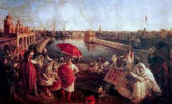

The Sikh Empire(est 1799 - 1849) was the first and last empire that was commonly known within Sikhism and other people around the world. This empire is not known by many because other great empire dominated near India during this time such as the British Raj and the Maratha Empire
Though many empires have said that they coexisted with other religions and cultures, the Sikh Empire was one of the only empires on record to have muliple faiths in their government. All Sikhs, Hindus, Muslims, Christains, Jains, Buddhists, Zorostrians, and other faiths lived together in harmony.
The great empire was controlled by a monarch or a Maharaja. The empire was so strong for so long because of the unity and equality displayed by Maharaja Ranjit Singh as he brought communities together to fight and conquest other regions around India, Nepal, China, Pakistan, and even Afghanistan. However, after the death of Maharaja Ranjit Singh, the Sikh Empire could not handle the chaos as the lack of leadership and political presence lead to their eventual downfall to the British. With that being said, this website that will be the gateway to learning more about this magnficent empire
The reason why the Sikh Empire isn't known among other people is because of manipulation and discrimination against Sikh people after the fall of the empire under British rule and after Independence Day in India, Pakistan, and Bangladesh
Along with taking and conquering over Northern India, many artifacts such as the infamous Kohinoor items and other religious items were taken away wiping out much of the physical evidence of the empire. Meanwhile, many Indians and British officals wiped out gernerations of Sikhs causing disparities within story-telling which the main source of passing down history in Asian culture.
At the end of the day, the British completely dismantled the monarch as the they Mahraja Ranjit Singh's son and wife to England where the son was completely detached from the culture.
This website will be a great way to spread the lost information of this empire. Hopefully, this interactive website will help provide information in a fun and efficent way.